Proyecto Creador de Currículums
Exploración de interfaces interactivas y herramientas de diseño web.
Efecto Parallax
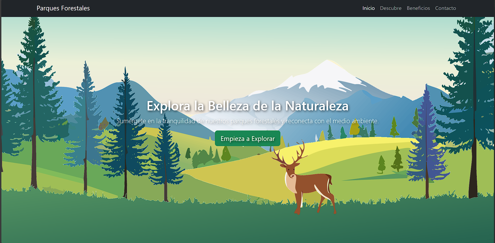
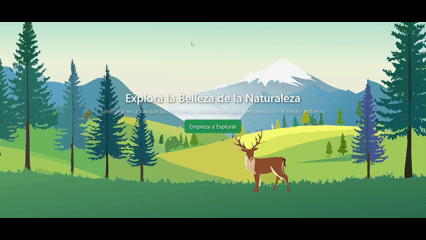
Generador de CV
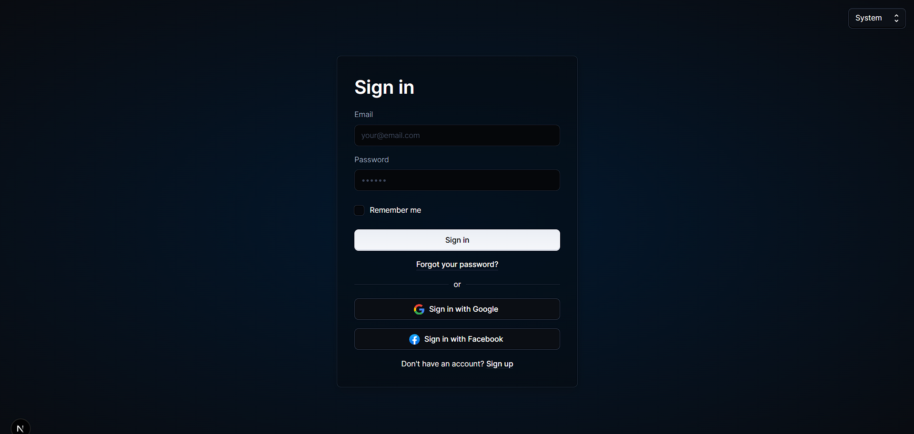
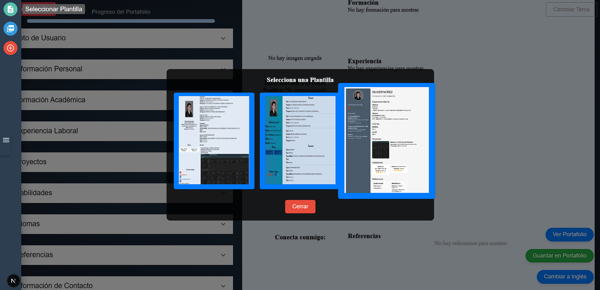
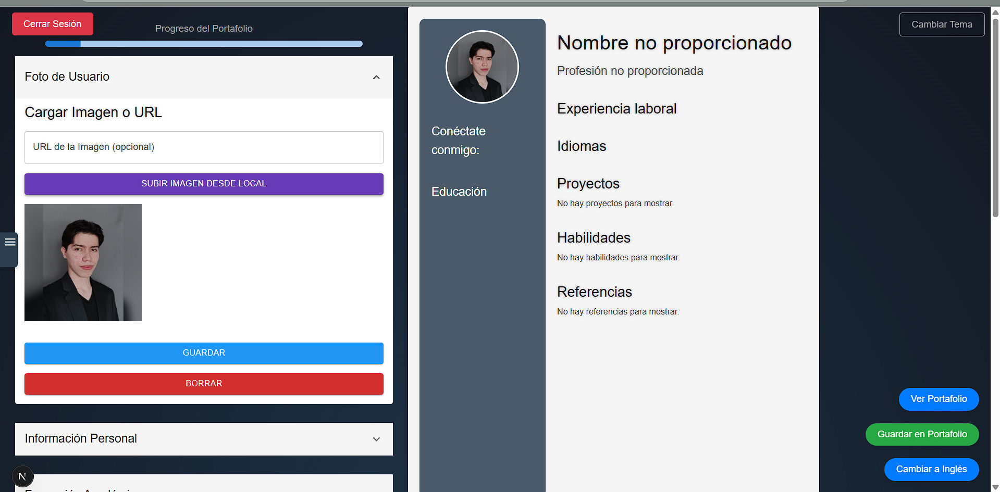
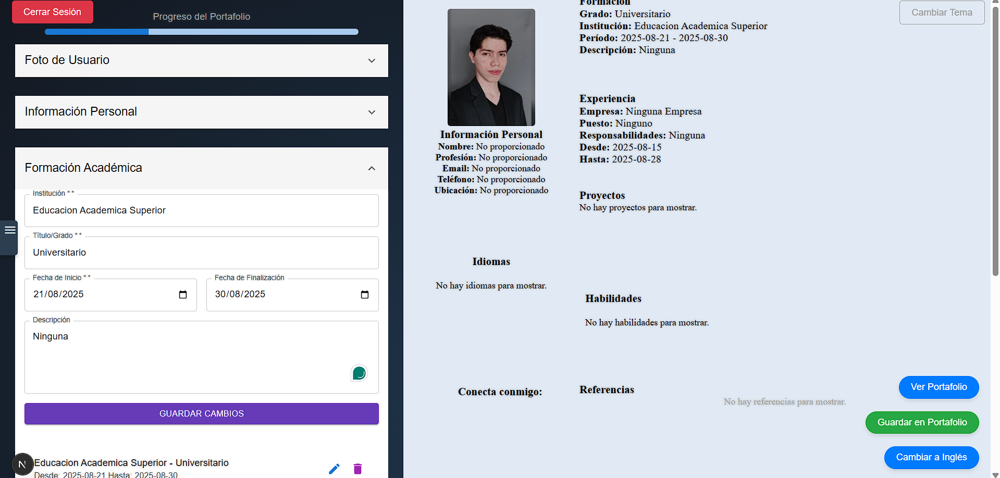
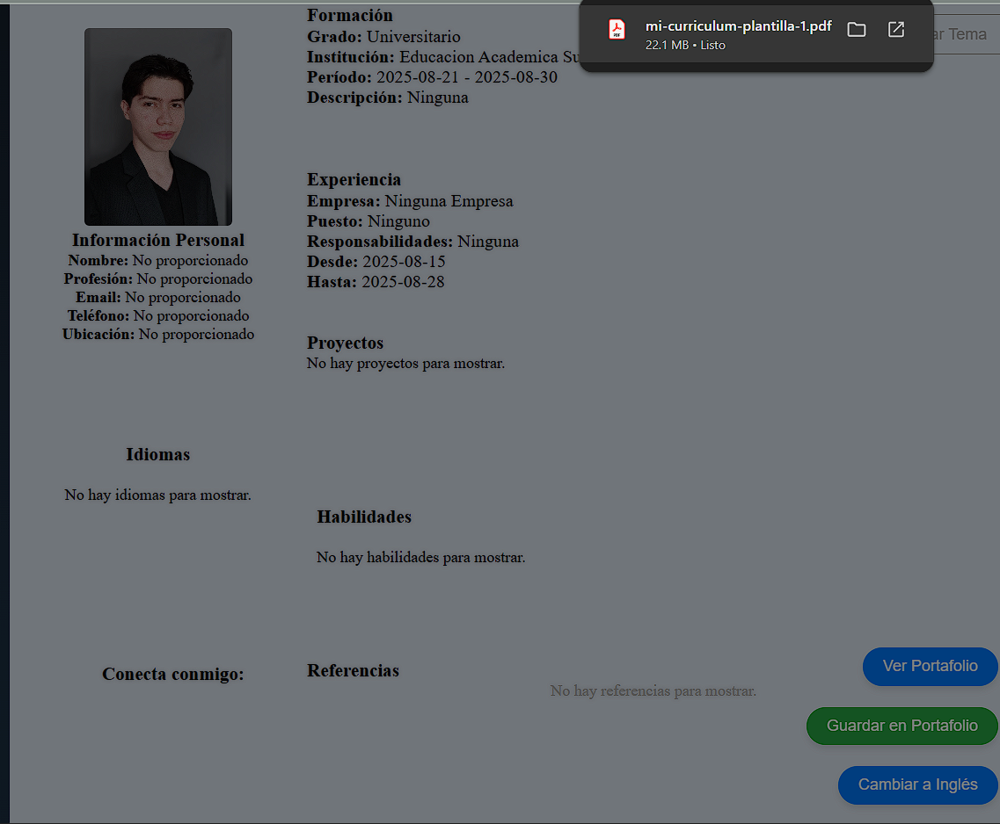
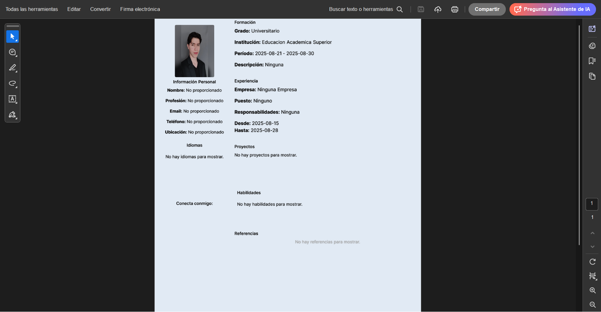
Plantillas de Diseño
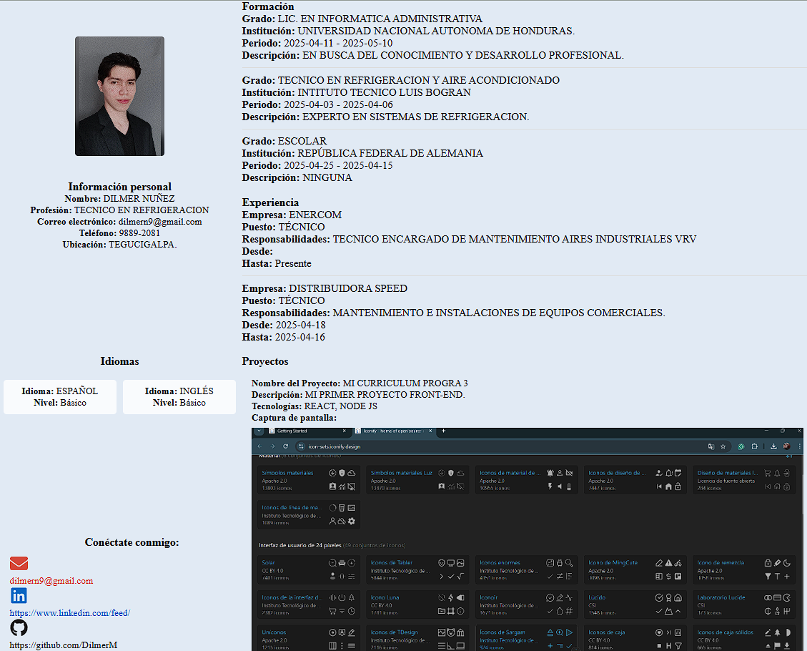
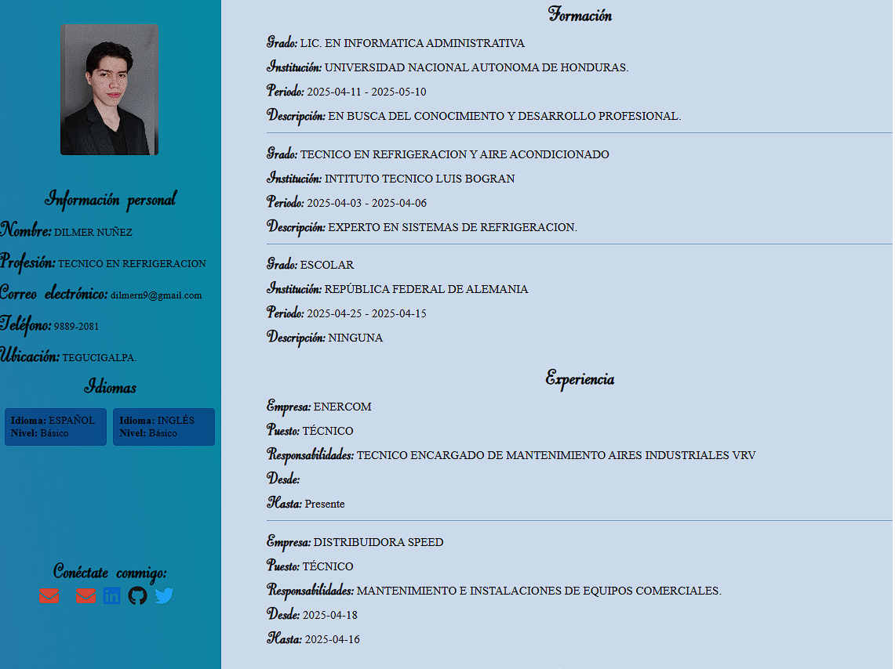
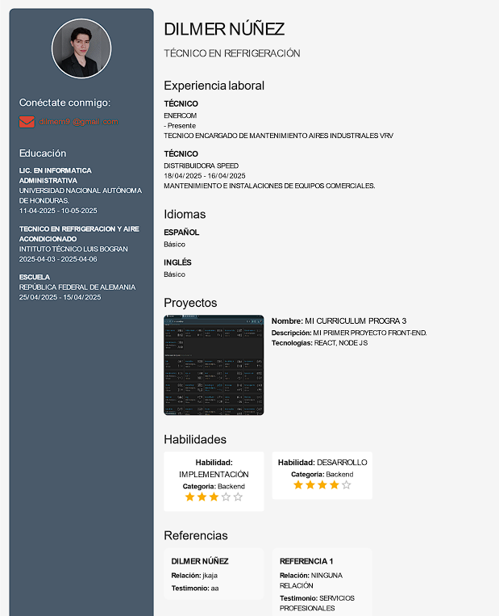
Sobre el Proyecto
Proyecto de Creador de Currículums. Su funcionalidad principal es un generador dinámico de currículums que permite crear y descargar CVs en formatos digitales o PDF, partiendo de una selección de plantillas predefinidas de alta calidad.
Desarrollado íntegramente con Next.js y React, el proyecto destaca por una interfaz fluida e intuitiva que prioriza la experiencia de usuario. A diferencia de otros sistemas, este proyecto prescinde de bases de datos pesadas, enfocándose en la manipulación de estados y generación de documentos en tiempo real para una mayor agilidad.
Este trabajo fue concebido con fines académicos para la asignatura de Lenguajes de Programación 3, demostrando el potencial de las arquitecturas modernas de front-end para resolver necesidades prácticas mediante interfaces de usuario limpias y funcionales.
Perspectiva del Desarrollador
Adaptabilidad de Plantillas
El mayor desafío radicó en adaptar las diversas plantillas, ya que cada una exigía tipografías, posiciones y estructuras visuales distintas. Gestionar el movimiento dinámico de los ítems de información entre estos diseños variados fue un proceso complejo durante las etapas iniciales.
Componentización con React
Aprender e implementar React y Next.js fue el punto clave para acelerar el desarrollo. La arquitectura basada en componentes permitió reciclar código de manera eficiente, facilitando la construcción de una interfaz modular donde los elementos se reutilizan sin redundancia.
Stack Tecnológico
Este proyecto integra un conjunto de tecnologías modernas para el desarrollo Full Stack y la gestión de infraestructura.
- Next.js
- HTML5
- CSS3
- JavaScript